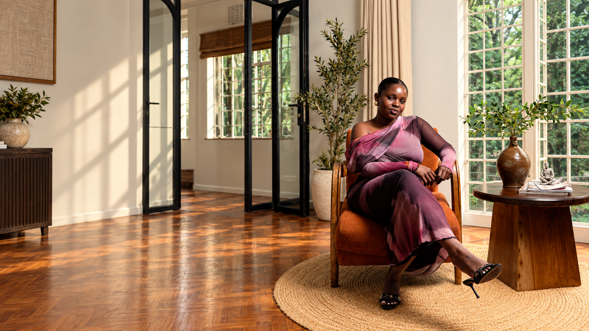
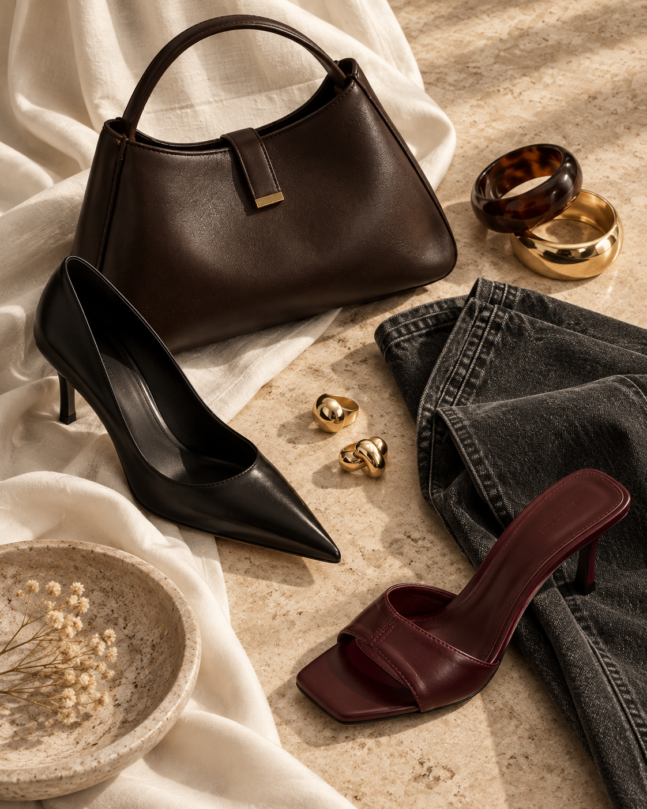

Signature Edit
A complete wardrobe review and edit, designed to reveal what works, release what does not, and define what comes next.
Enquire ↗
Private styling · Nairobi & beyond
Style that feels instinctive, personal and entirely your own.
Explore the house ↘Where style meets strategy.
DiscoverThe House
House of YVN is a private styling studio built on a simple idea: the best wardrobe does not transform you into someone else. It brings you into focus.
Through thoughtful curation, honest conversation and an exacting eye, we create wardrobes that hold your life beautifully—wherever it is taking you next.
Our point of view ↘Two ways to experience House of YVN
A personal styling service shaped around your life, wardrobe and next chapter.
Explore styling services ↘
Practical style education that gives you the knowledge to dress independently.
Explore the courses ↗The Services
Each experience is personal, discreet and shaped to meet you exactly where you are.
A complete wardrobe review and edit, designed to reveal what works, release what does not, and define what comes next.
Enquire ↗Intentional sourcing for a season, a new chapter or the everyday. Every piece considered; nothing added without purpose.
Enquire ↗Complete styling for the moments that matter—from a singular look to a considered wardrobe for an entire journey.
Enquire ↗The YVN Method
Your life, your eye, your needs. We begin with the person—not the clothes.
We identify the silhouettes, palette and details that make your style unmistakably yours.
Every recommendation earns its place, creating ease, longevity and quiet confidence.
Our philosophy
“Where style
meets strategy.”
Because getting dressed should feel less like performance—and more like recognition.
The eye behind the house
A stylist with an instinct for the detail that changes everything.
Yvonne founded House of YVN to offer a more personal kind of styling—one grounded in attention, honesty and the belief that true luxury is feeling completely at home in what you wear.
Work with Yvonne ↘An instinct for restraint.
An eye for what lasts.
Self-paced style education
Know yourself. Understand your wardrobe. Learn to dress with clarity and intention.
Self-paced courses for anyone ready to move beyond guesswork, understand what works for them and develop a personal style blueprint of their own.
The flagship programme
A nine-part personal journey through self-understanding, wardrobe strategy, body architecture, colour, texture, shopping, African style, outfit creation and the value of clothing.
Explore the self-paced courses ↗Know yourself → Train your eye → Know your value
Self-paced studies.
One personal blueprint.
Learn at your own pace—from understanding yourself and your silhouette to shopping intelligently, expressing your roots and recognising the true value of clothing.
Explore the courses ↗From the journal
Private enquiries
Tell us a little about where you are and where your wardrobe needs to take you.
Enquire privately ↗